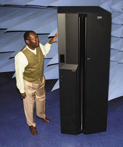
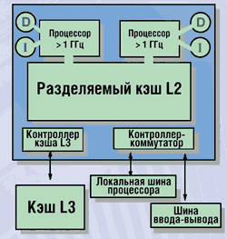
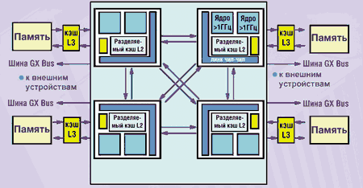
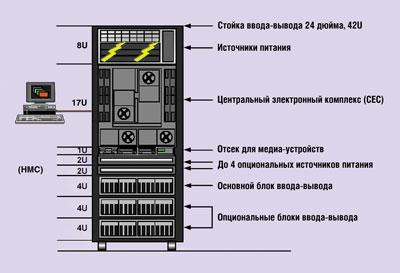
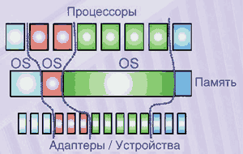
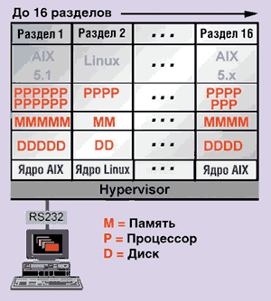

Андрей Борзенко
В конце октября 2001 г. корпорация IBM (http://www.ibm.com) анонсировала самый мощный UNIX-сервер - eServer pSeries 690. Этот сервер, известный также под названием Regatta, увенчал пятилетнюю работу по созданию нового класса UNIX-систем, объединяющих в себе достижения в области создания микропроцессоров и технологий, прошедших проверку на мэйнфреймах.
Маркетинговая кампания по продвижению проекта Regatta началась еще в конце 1996 г., когда IBM отставала от Sun Microsystems на рынке UNIX-серверов. Первоначально планировалось создать 128-процессорный компьютер на базе тех же технологических концепций, что были реализованы в традиционных серверах IBM. Однако после основательной технической проработки проекта специалисты IBM отказались от 128-процессорных систем в пользу совершенно иной конструкции: было решено использовать меньшее число процессоров, связанных друг с другом и с подсистемами памяти сверхвысокоскоростными каналами, ведущими во внешнюю сеть и к системе хранения данных.
В ходе работы над проектом Regatta были кардинально пересмотрены фундаментальные основы серверов данного класса, что позволило внедрить технологии, которые ранее никогда не применялись в UNIX-системах, в частности:
- два процессора на одном кристалле;
- многопроцессорные модули;
- виртуализация (логические разделы);
- возможности самовосстановления.
Разработчики отмечают, что в новых системах были объединены лучшие аппаратные и программные инновации, ставшие результатом многолетнего опыта работы корпорации в области мэйнфреймов и систем UNIX, которые уже нашли свое воплощение в ряде компьютеров eServer. Так, энергосистема, конструктив, а также обеспечение надежности, доступности и управляемости систем p690 были заимствованы от мэйнфреймов (из серии zSeries), логические разделы (LPAR, logical partitioning) - от iSeries (AS/400) и zSeries.
Компьютер pSeries 690 (рис. 1), построенный с применением технологий проекта IBM eLiza, - единственный сервер UNIX, который предлагает несколько уровней самовосстановления. Эти технологии позволяют компьютеру продолжать работу даже в случае серьезных неисправностей и системных ошибок. Тысячи датчиков прогнозируют момент, когда вероятность отказа компонента - такого, как центральный процессор, кэш- или оперативная память, достигнет критического уровня. В этом случае компонент будет автоматически отключен, однако сервер будет продолжать работу. Испытанная на мэйнфреймах технология позволяет обнаружить основную причину проблем до того, как они приведут к цепной реакции сбоев, препятствуя таким образом их распространению по всей системе.
|  | Рис. 1. Сервер eServer pSeries 690.
|
Другие серверы сходного класса предлагают ручную горячую замену уже отказавших компонентов или простую изоляцию сбоев в рамках раздела, что не может полностью исключить вероятность краха системы. Здесь следует особо упомянуть технологию оперативной памяти Chipkill, сервисный процессор, средства изолирования неисправной памяти и т. п.
Особенности процессора Power4
Устройство Power4 уникально уже тем, что в нем даже один кристалл - это уже мультипроцессорная система: в одном корпусе содержатся два 64-разрядных микропроцессора. Для архитектуры кристалла Power4 характерно применение таких современных решений, как суперскалярная структура, внеочередное исполнение команд, большая кэш-память на кристалле, специализированный порт для основной памяти, а также высокоскоростные линки для объединения микропроцессоров в системы с архитектурой распределенной разделяемой памяти. Каждый процессор Power4 (рис. 2) имеет два конвейерных блока для работы с 64-разрядными операндами с плавающей запятой, выбирающих на исполнение по пять команд каждый, и два блока для работы с памятью. Процессоры содержат для команд и данных раздельные блоки кэш-памяти первого уровня емкостью по 64 Кбайт каждый. Кроме того, имеется разделяемая (общая) кэш-память второго уровня емкостью 1,4 Мбайт на кристалле и внешняя кэш-память третьего уровня емкостью 32 Мбайт. Совместный доступ к внешней кэш-памяти выполняется по технологии DSI (Distributed Switch Interconnect). Для образования мультипроцессорных конфигураций имеются специальные линки с высокой пропускной способностью.
|  | Рис. 2. Блок-схема Power4.
|
Процессор использует параллелизм не только на уровне команд, но и на уровне процессов ("тредов"). Динамическое выявление параллелизма позволяет предотвращать простои процессора при трудно выявляемых статически исключительных ситуациях, например, промахе в кэш-памяти. Power4 изготавливается с учетом проектных норм 0,18 мкм по технологии SOI ("кремний на изоляторе") с несколькими слоями медной металлизации на кристалле площадью около 400 мм2. Базовое напряжение питания Power4 равно 1,5 В. Тактовая частота кристалла, содержащего 174 млн транзисторов, может составлять 1,1 или 1,3 ГГц. Такие параметры обеспечивает технологический процесс CMOS-8S2, представляющий собой дальнейшее развитие известного процесса CMOS-8. После перехода на проектные нормы 0,13 мкм тактовая частота будет увеличена до 2 ГГц.
Одной из отличительных особенностей Power4 стало наличие кэш-памяти второго уровня, разделяемой двумя процессорами кристалла, а также внешними процессорами других кристаллов через линки шириной 128 разрядов, работающие на тактовой частоте более 500 МГц, что обеспечивает пропускную способность свыше 10 Гбайт/с. При объединении четырех кристаллов и их специальном размещении проводники линков могут быть достаточно короткими и прямыми, что важно при работе на высоких тактовых частотах.
Физически кэш-память второго уровня емкостью около 1,4 Мбайт состоит из нескольких одинаковых блоков, доступ к которым выполняется через коммутатор с пропускной способностью на уровне 100 Гбайт/с. Протокол когерентности обеспечивает размещение данных, поступивших по линкам, в том блоке кэш-памяти, который использовался для размещения данных последним. Порт кристалла Power4, предназначенный для подключения кэш-памяти третьего уровня емкостью до 32 Мбайт, имеет ширину 128 разрядов для каждого из двух направлений пересылки данных. Порт функционирует не на полной тактовой частоте процессоров кристалла, но тем не менее при передаче обеспечивает пропускную способность на уровне 13 -- 14 Гбайт/с. Теги кэш-памяти третьего уровня расположены внутри кристалла, что ускоряет реализацию протокола когерентности. Скорость передачи данных между кэш-памятью третьего уровня и основной памятью может достигать 12,8 Гбайт/с.
Каждый из двух процессоров Power4 имеет систему команд, реализованную в системах RS/6000 и AS/400 и полностью совместимую с системой команд PowerPC. Сохранение системы команд, продиктованное стремлением сохранить совместимость для двоичного кода пользователей, потребовало применения не только однотактных команд, но и микропрограмм и даже прерываний для программной реализации наиболее сложных инструкций.
Каждый сдвоенный процессор Power4 упакован в керамический мультипроцессорный модуль (размером 4,5х4,5 дюйма) вместе с тремя своими близнецами. Эта базовая строительная единица компьютеров называется MCM (MultiChip Module). Такой модуль, содержащий четыре микросхемы Power4, в сумме объединяет в себе восемь процессоров. В названии МСМ просматриваются аналогии и с термином TCM (Thermal Conduction Module), относящимся к знаменитому процессорному модулю на мэйнфреймах, который обеспечивает эффективное охлаждение расположенных в нем процессоров. Технологические достижения, которые привели к появлению новейших многокристальных модулей IBM, впервые были реализованы в компьютере eServer z900.
Модуль MCM (рис. 3) выполнен в многослойном керамическом корпусе, который содержит магистрали, соединяющие микросхемы между собой, а также с модулями кэш-памяти и высокоскоростным коммутатором для связи с удаленными процессорами. Четыре микросхемы Power4 образуют 8-процессорную конфигурацию и расположены в МСМ под углом 90° друг относительно друга, что позволяет минимизировать длину шин расширения, связывающих микросхемы и модули МСМ. В этих шинах используется уникальная технология волновой конвейеризации (wave pipelining), обеспечивающая очень низкие величины задержек. Пропускная способность каждой шины превосходит 8 Гбайт/с, и соответственно МСМ с четырьмя шинами расширения, ведущими к другим МСМ, будет иметь суммарную пропускную способность свыше 32 Гбайт/с. Такую пропускную способность обменов между МСМ будет иметь 32-процессорная SMP-конфигурация из четырех модулей МСМ.
На самом деле шины расширения, кроме собственно межмодульных шин, включают выделенные шины для организации ввода-вывода и создания NUMA-конфигураций. При разработке Power4 было использовано множество специальных решений, направленных на повышение надежности работы этих микросхем и компьютеров на их основе. В частности, предусмотрен механизм обнаружения и коррекции ошибок для кэш-памяти второго и третьего уровней.
|  |
| Рис. 3. Блок-схема модуля MCM.
|
Архитектура eServer pSeries 690
Тактовая частота и число процессоров чрезвычайно важны для производительности сервера, однако не менее существенный параметр - это архитектура системы. Если системная архитектура не способна обеспечить достаточную производительность доставки данных из памяти и подсистем ввода-вывода, процессоры большую часть времени тратят зря в ожидании команд. Таким образом, одно из главных условий высокой производительности и масштабируемости - достаточная пропускная способность соединений. Напомним, что обмен данными между кэш-памятью и процессором происходит со скоростью свыше 125 Гбайт/с. Сервер pSeries 690 может масштабироваться до 32-процессорной SMP-конфигурации, с возможностью расширения оперативной памяти до 256 Гбайт, емкости встроенных дисковых накопителей - до 4,5 Тбайт, количества разъемов расширения PCI - до 160 слотов. По сравнению с моделями pSeries 680 у новых серверов максимальный объем оперативной памяти увеличен более чем вдвое, пропускная способность возросла в 11,3 раза, а скорость работы подсистемы ввода-вывода - в шесть раз.
Сервер состоит из нескольких секций: центрального электронного комплекса (Central Electronics Complex, CEC), секций ввода-вывода (числом до восьми) и секции для медиа-устройств (рис. 4). Кэш-память третьего уровня выполнена из двух микросхем eDRAM, емкостью по 16 Мбайт. Для управления каждый сервер должен быть подключен к консоли HMC (Hardware Management Console). В выдвижной секции CEC высотой 17U установлено до четырех процессорных модулей, от 8 до 256 Гбайт оперативной памяти и сервисный процессор.
|  | Рис. 4. Система в одной стойке.
|
В подсистемах ввода-вывода pSeries 690 используется технология, аналогичная той, которая применялась в моделях pSeries 660 Model 6M1. PCI-адаптеры ввода-вывода размещены в отдельных блоках, которые связаны с СЕС (процессором и памятью) специальными RIO-кабелями (Remote I/O) для удаленного ввода-вывода. Сегодня серверы поддерживают до шести секций ввода-вывода, а в первой половине 2002 г. разработчики намерены увеличить этот предел до восьми. Каждая секция ввода-вывода высотой 4U содержит 20 слотов PCI с возможностью горячей замены и отсеки для накопителей с горячим подключением, а также резервные блоки и кабели питания. Стоит напомнить, что адаптеры PCI с возможностью "горячей" замены - это следующий шаг в развитии устройств с горячим подключением. Важная особенность этого шага состоит в том, что для установки и удаления теперь не требуется переводить секцию ввода-вывода в сервисный режим. Все слоты поддерживают 64-разрядные адаптеры с тактовой частотой 66 МГц, однако обладают обратной совместимостью с 32-разрядными платами, работающими на 33 МГц.
В секции ввода-вывода можно подключить до 16 накопителей емкостью 18,2 или 36,4 Гбайт через встроенный контроллер Ultra3 SCSI. Максимальный объем дисковой подсистемы для каждой секции составляет 582 Гбайт, что для всех восьми секций в сумме дает более 4,6 Тбайт.
Секция медиа-устройств - неотъемлемый компонент практически любой системы. Она содержит панель оператора, дисковод и разделы для четырех медиа-устройств (два раздела, каждый из которых рассчитан на два отсека). Одним из медиа-устройств всегда должен быть дисковод. Подключение данной секции к одной из секций ввода-вывода осуществляется кабелем через SCSI-адаптер.
В системах питания, контроля температуры и связи предусмотрена избыточность для предотвращения сбоев сервера из-за отказа отдельных элементов. Например, каждый блок ввода-вывода подключается к системе посредством двух RIO-портов с пропускной способностью 1 Гбайт/с в расчете на каждый блок.
Сервисный процессор - это полноценный микрокомпьютер со своей оперативной памятью и памятью для хранения программ, расположенный внутри большой компьютерной системы. Этот вспомогательный процессор служит двум основным целям. Во-первых, он инициализирует и тестирует логические связи микросхем, которые составляют процессорную подсистему сервера, конфигурирует их для нормальной работы. Во-вторых, он постоянно контролируют функциональное "здоровье" сервера, немедленно обнаруживая терпящие сбой компоненты. В-третьих, сервисный процессор отвечает за контроль оборудования и управления им и при создании или изменении разделов выполняет необходимые изменения аппаратной конфигурации. Сервисный процессор служит интерфейсом между pSeries 690 и консолью HMC. В свою очередь, эта консоль представляет собой специализированное устройство, состоящее из компьютерной системы с графическим интерфейсом пользователя и набором приложений для конфигурирования и управления системой pSeries 690. К основному набору функций по управлению LPAR-разделами относятся базовые приложения поддержки самой консоли HMC (в том числе для обновления ПО, работы с отладочной информацией и регистрации ошибок), а также следующие функции:
- создание и сохранение профилей разделов, в которых содержатся сведения о выделенных разделу процессорных мощностях, памяти и ресурсах ввода-вывода;
- запуск, остановка и сброс раздела или целой системы;
- загрузка раздела или системы с выбором профиля;
- отображение состояния систем и разделов.
HMC также предоставляет средства для выявления неполадок и поддержки операций сопровождения, таких, как уведомление о проблемах путем звонка на домашний телефон администратору и регистрация ошибок в журнальном файле.
После отключения HMC системы pSeries 690 работают, используя информацию о конфигурациях разделов, сохраненную в энергонезависимой памяти. Перезагрузка отдельных разделов выполняется посредством команды завершения работы ОС AIX. Можно отключить или включить целую систему и перезапустить заранее определенные разделы автоматически, однако для активизации отдельных разделов или изменения их конфигурации необходима консоль HMC. Возможность в любое время изменить конфигурацию на pSeries 690 обеспечивается наличием избыточных консолей HMC. Все они взаимно синхронизируются, регулярно считывая информацию конфигурации из энергонезависимой памяти.
Серверы pSeries 690 поставляются в новых стойках шириной 24 дюйма со встроенной подсистемой питания. Высота каждой стойки 42U, что достаточно для установки четырех секций ввода-вывода. Стойка расширения, получающая питание от первой стойки, предоставляет дополнительное пространство (еще 42U) для дополнительных секций.
Логические разделы
Способность системы самостоятельно заимствовать ресурсы у одного приложения и отдавать их другим программам может сэкономить время и деньги в интенсивно используемых системах, а также облегчить работу их администраторов. Этот подход - основная идея разбиения системы на логические разделы (LPAR). Благодаря ему процессы, нуждающиеся в дополнительных ресурсах, могут заимствовать их у других процессов, которые пользуются ими не так интенсивно. В системах класса high-end необходима большая гибкость, в частности возможность подразделять систему на меньшие разделы, каждый из которых способен поддерживать отдельный экземпляр ОС или набор приложений для обслуживания определенных задач.
В каждом сервере pSeries 690 можно определить до 16 логических разделов, каждый из которых может работать под управлением ОС AIX 5L или Linux, причем для разделов сервера допустимо любое сочетание ОС (рис. 5). Данный сервер предоставляет самые гибкие возможности распределения ресурсов процессоров, памяти и ввода-вывода, позволяя создавать виртуальные серверы с одним или несколькими процессорами, что недоступно в аналогичных системах конкурентов. Планируется также реализовать возможность динамического перераспределения ресурсов между логическими разделами. Можно перечислить несколько основных причин, которые заставляют делить большие системы на разделы. Это следующее:
- совмещение серверов;
- разделение сред;
- повышение загрузки оборудования;
- автономность приложений;
- комбинирование системных ресурсов.
|  | Рис. 5. Логические разделы.
|
Работа на одной машине множества приложений, которые ранее располагались на физически раздельных системах, позволяет уменьшить совокупную стоимость владения, снизить требования к управлению системой, а также площадь, занимаемую системой в помещении.
Сервер высокой надежности с вычислительной мощностью, достаточной для деления на разделы, может решить задачу совмещения серверов; для этого данный компьютер логически подразделяется на ряд отдельных, меньших систем. Таким образом удается достичь автономности приложений в совмещенной среде, получив к тому же такие дополнительные выгоды, как сокращение общей площади, занимаемой оборудованием, наличие единой точки управления и более простой механизм перераспределения ресурсов при изменении рабочих нагрузок.
Мощности серверов обычно рассчитываются так, чтобы гарантированно справиться с возможными пиковыми нагрузками, хотя средние показатели использования ресурсов в промышленных системах существенно ниже. Изменение объема ресурсов, выделяемых отдельным разделам, позволяет более эффективно использовать сервер, подверженный резким перепадам рабочей нагрузки. Например, разделу, сильно загруженному в определенные дни недели, могут предоставляться дополнительные ресурсы, изъятые из других разделов, которым они в эти пиковые периоды не нужны.
Деление на разделы позволяет выделить часть системных ресурсов для тестирования новых версий приложений и ОС параллельно с обычной работой основной рабочей среды. В этом случае не требуется специально выделять дополнительные серверы для целей тестирования, и можно быть уверенными, что не будет проблем с оттестированными версиями при их переносе в основную систему: ведь они проверяются на оборудовании рабочей системы.
В общем случае рабочие среды и среды для тестирования следует изолировать друг от друга. В отсутствие разбиения на разделы единственный возможный способ одновременной разработки и тестирования приложений заключается в покупке дополнительного оборудования и ПО. Однако позже это оборудование и программы часто оказываются ненужными. Наиболее рентабельное решение в таком случае - разбиение компьютера на логические разделы и размещение систем для разработки и для тестирования в разных разделах. По завершении испытаний ресурсы, на которых они выполнялись, возвращаются в отдел разработки или туда, где они действительно нужны. Иногда испытательная среда становится рабочей, в этом случае достаточно лишь добавить в раздел дополнительные ресурсы. По мере появления новых проектов их разработка и тестирование выполняются на том же оборудовании, на котором они будут в конечном счете разворачиваться.
Деление на разделы позволяет повысить загрузку оборудования в случаях, когда ПО не очень эффективно масштабируется вместе с ростом числа процессоров. Использование нескольких копий приложения (если это возможно) на отдельных меньших разделах иногда позволяет добиться большей производительности, чем при работе одного развитого экземпляра этого же приложения.
Выполнение приложений в отдельных разделах позволяет гарантировать, что они не нарушат работу друг друга в случае программного сбоя в одном из разделов. Кроме того, приложения оказываются не в состоянии монополизировать ресурсы и блокировать доступ к ним другим прикладным программам, нуждающимся в ресурсах.
Управление рабочим заданием с изменяющимися во времени требованиями к ресурсам существенно упрощается, если задание выполняется в разделе, размер которого можно изменить в соответствии с потребностями. Многие приложения полагаются на системное время, устанавливаемое администратором системы. Приложения, которые работают в других часовых поясах, обычно выполняются в отдельных копиях ОС. Даже если приложения самостоятельно поддерживают информацию о часовых поясах, все равно бывает довольно сложно создать график плановых отключений для обслуживания и обновления, который бы не нарушал работу отдельных программ. Разбиение на логические разделы упрощает организацию на одном сервере вычислительных операций с различными региональными параметрами. Различные задачи работают в отдельных логических разделах, со своими ОС, временем и датой.
Деление на разделы позволяет обновлять ПО параллельно с работой приложений в отдельном разделе. Эта методика также обеспечивает большую автономность для множества приложений, которые ранее выполнялись в одной копии ОС. Когда критически важна высокая доступность системы, рекомендуется реализовать возможность переходов между разделами разных серверов в случае сбоя.
Управление ресурсами
Для поддержки LPAR-среды необходима совместная работа многих системных компонентов. Особенности работы процессоров, микрокода и ОС требуют от каждого из этих компонентов поддержки определенных функций. Поэтому реализация LPAR невозможна исключительно на основе одного из компонентов, будь то ПО, оборудование или микрокод. В общем случае логический раздел состоит из процессоров, памяти и слотов ввода-вывода с подключенными к ним устройствами - все эти ресурсы составляют подмножество общего пула имеющихся в системе ресурсов (рис. 6). LPAR-среда практически прозрачна для приложений ОС AIX. Фактически приложения сторонних поставщиков следует лишь сертифицировать для работающей в разделе версии AIX, а не для работы в самой LPAR-среде. Таким образом, LPAR-конфигурацию можно рассматривать всего лишь как еще одну аппаратную среду платформы pSeries.
|  | Рис. 6. Управление ресурсами.
|
Физическое деление на разделы (Physical PARtitioning, PPAR) отличается от разбиения на логические разделы тем, каким образом ресурсы выделяются в разделы. Пределы логических разделов не обязательно совпадают с границами физических блоков (наборов ресурсов), из которых состоит сервер. Логическое разбиение обеспечивает большую гибкость и свободу выбора компонентов из всего набора имеющихся системных ресурсов. Это позволяет более тонко управлять составом разделов, максимизировать использование системных ресурсов и устранить излишние операции по перераспределению ресурсов.
Каждый логический раздел занимает одну неразрывную область памяти, поэтому может работать в простой многопроцессорной SMP-среде без каких-либо аппаратных изменений. Все образы ОС обслуживаются одной картой распределения памяти, но защищены друг от друга специальными аппаратными механизмами управления доступом к адресам и специальным микрокодом, устанавливаемым для поддержки ОС.
Реализация LPAR в серверах IBM pSeries предусматривает выделение более мелких порций ресурсов по сравнению с существующими вариантами PPAR. Физические разделы ограничены пределами системной платы, частое переконфигурирование разделов в них не всегда возможно.
Программные сбои не распространяются на всю систему, а оборудование и микрокод обеспечивают надежную изоляцию ресурсов. Многие виды ошибок, даже в совместно используемых ресурсах, не сказываются за пределами одного раздела. Кроме того, многие компоненты pSeries 690 оснащены развитыми механизмами восстановления.
В ряде ОС предусмотрены функции управления ресурсами, которые применяются даже при работе ОС в отдельном физическом или логическом разделе. Управление ресурсами предоставляют администратору дополнительные возможности для выделения приложениям вычислительных ресурсов (процессоров, памяти и устройств ввода-вывода). Ресурсы можно выделять в соответствии с заданными правилами распределения (по пользователям, группам, приложениям). Таким образом, удается предотвратить монополизацию всех доступных ресурсов отдельными заданиями, кроме того, обеспечивается механизм оптимальной балансировки использования системных ресурсов. Группируя приложения по требованиям к ресурсам, администраторы получают возможность управлять целыми подмножествами приложений и повышать эффективность использования сервера. Реализация механизма управления ресурсами зависит от ОС.
Возможность определять уровень детализации ресурсов в разделах позволяет более эффективно использовать мощности сервера. Однако для изменения состава ресурсов в разделах требуется административное вмешательство. Сам по себе механизм деления на логические или физические разделы не в состоянии точно выделять необходимый объем системных ресурсов задачам, потребности которых в вычислительных мощностях резко меняются за короткие промежутки времени. В качестве альтернативы применяются средства программного управления ресурсами, например, диспетчер нагрузки AIX WLM (AIX WorkLoad Manager), который обеспечивает гибкость и автоматическую корректировку в отдельном экземпляре ОС. Во многих проектах требуется и программное управление ресурсами, и механизм LPAR, хотя зачастую достаточно лишь одного из этих механизмов. Создатели проектов самостоятельно решают, что нужнее: способность LPAR-разделов изолировать экземпляры ОС или большая гибкость распределения ресурсов, обеспечиваемая диспетчером WLM.
Диспетчер рабочей нагрузки - неотъемлемая часть стратегии LPAR для AIX и базовая часть ОС AIX. Он предоставляет администраторам системы мощные возможности по управлению выделением ресурсов процессам и приложениям. Управление ресурсами в пределах отдельного раздела осуществляется так же, как и на сервере без разделов.
Выбор ресурсов
Создавая раздел, администратор системы также создает его профиль, в котором определяет минимальный и рекомендуемый набор ресурсов для данного раздела. У раздела может существовать несколько профилей с различными наборами ресурсов, однако в любой момент времени активен только один из них. Механизм выделения ресурсов на pSeries 690 позволяет выделять отдельные компоненты отдельным разделам, не создавая взаимозависимости между этими ресурсами. Самая маленькая единица выделяемого ресурса - один процессор, 1 Гбайт памяти или один PCI-слот. При этом разрешается выделять любые слоты в любом блоке ввода-вывода системы.
Администратор системы, создающий профиль для выделения разделу ресурсов, определяет необходимое минимальное число процессоров и объем памяти. В дополнительных параметрах указывается рекомендуемая максимальная конфигурация раздела. При активизации раздела HMC проверяет, достаточно ли доступных ресурсов для удовлетворения минимальных требований. Если да, то раздел запускается. Если доступно даже больше ресурсов, чем минимально необходимо, они добавляются в раздел, пока не будет достигнуто указанное в конфигурации рекомендуемое значение. Такой порядок обеспечивает дополнительную гибкость в управлении различными комбинациями разделов, а также полезен в случаях, когда некоторые ресурсы становятся недоступными и требуется определить, какие разделы пользуются приоритетом при выделении ресурсов. Состав ресурсов, выделенных разделу, изменяется путем выбора другого профиля при активизации раздела.
HMC управляет рабочим состоянием разделов и может задавать различные режимы работы для раздела, например, нормальный или диагностический. Консоль иногда используется для остановки раздела после отключения ОС администратором системы. HMC также вправе выполнять полный сброс раздела, эта операция напоминает нажатие кнопки включения питания на автономном сервере.
Надежность, доступность и безопасность
Приложения работают в разделах так же, как и на автономном компьютере. Конструкция серверов семейства pSeries 690 предусматривает изоляцию ПО, работающего в отдельных разделах, а также защиту от естественных дефектов программ и от преднамеренных попыток приложений преодолеть барьеры между логическими разделами. У системы безопасности есть несколько особенностей. Во-первых, конструкция серверов pSeries 690 предотвращает какой бы то ни было доступ к данным других разделов; исключение составляет обычный обмен по сети. Это позволяет защитить разделы от несанкционированного доступа через границы разделов. Во-вторых, программный аварийный отказ в разделе никак не влияет на работу других разделов. Это касается как сбоев приложений, так и отказов ОС. В-третьих, в pSeries 690 исключена монополизация одним разделом совместно используемого ресурса и блокировка доступа к нему из других разделов. В частности, каждый из разделов, совместно использующих один PCI- мост, не сможет заблокировать шину на неограниченное время.
Таким образом, приложения можно безопасно совмещать на нескольких разделах внутри системы pSeries 690 без риска нарушить общесистемную защиту.
По надежности, доступности и удобству обслуживания оборудования машины с поддержкой LPAR-среды похожи на работу с SMP-средой. Некоторые процедуры расширены из-за необходимости обслуживать многосерверные системы. Ошибки, вызывающие глобальный отказ на традиционном SMP-сервере (например, невосстановимая ошибка памяти или отказ процессора), подвергаются дополнительной проверке до инициирования машинного контроля. ОС AIX анализирует результаты попытки восстановления средствами микрокода и определяет процесс, работа которого нарушена по причине невосстановимой ошибки оборудования. Если ошибка произошла в пользовательском процессе, последний принудительно завершается. Если сбой произошел в ядре AIX, ОС останавливается. И в этом случае останов ОС AIX в одном разделе не повлияет на работу никакого другого раздела.
Для упрощения процедуры модернизации системы IBM предлагает программу CuoD (Capacity Upgrade on Demand - наращивание мощности по мере необходимости) для процессоров и памяти. При необходимости можно будет активизировать и распределить дополнительные системные ресурсы, уже установленные в системе, по существующим разделам.
Первые пользователиОдним из первых заказчиков серверов Regatta стала сеть розничной торговли одеждой The Gap, которая обслуживает также магазины Old Navy и Banana Republic. The Gap приобрела две машины pSeries 690, на которых будет установлено ПО, прогнозирующее спрос в ее магазинах. |